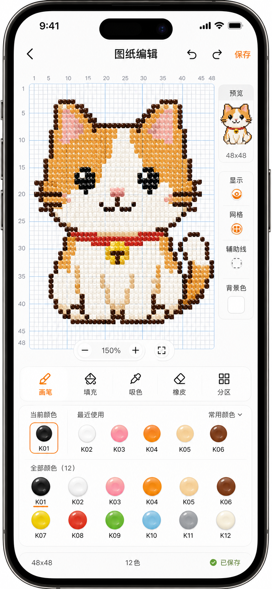
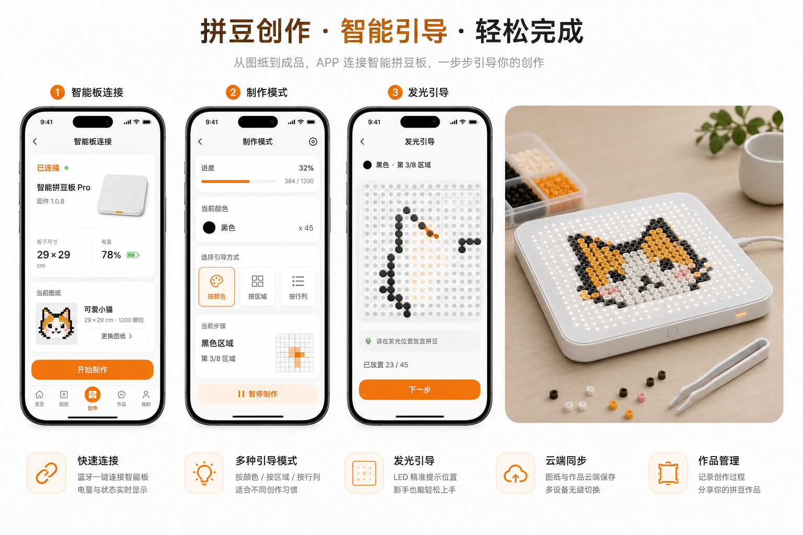

FIRST TASK
空白画布设计精灵
新手从基础骨架开始改色、换表情、加配饰，第一张图纸 100% 原创，也天然规避版权风险。
01 / Sprite system
新手从基础骨架开始改色、换表情、加配饰，第一张图纸 100% 原创，也天然规避版权风险。
完成图纸、打卡、参加挑战会解锁姿态、场景和配饰，但走治愈路线，不做焦虑式催促。
上传时它观察，生成时它思考，编辑时给建议，完成时庆祝。陪伴感进入工具链路。
晒图时带上自己的精灵形象，平台逐渐沉淀原创 IP，而不是只搬运外部 IP。
02 / Studio

壁垒不在通用生成模型，而在模型是否真的懂拼豆。
03 / Long memory
04 / UGC co-create
一张大图拆成多个区块，邀请好友或社群成员分别完成，最后合成完整作品。
同一底图，不同用户做不同配色，形成“一题多解”的内容池。
分享时带上自己的精灵，让每张作品都有平台识别点。
05 / Smart board
APP 同步图纸、精灵状态和制作步骤。
板子按颜色或区域发光，新手不用一直数格子。
完成作品后精灵反馈，用户自然进入晒图和材料复购。

06 / MVP scope
基础骨架、改色、表情、保存为第一张原创图纸。
完成图纸和创作行为带来轻量成长，不做重运营。
生成、编辑、完成时出现精灵反馈，增强陪伴感。
文字、多图、接力拼图、二创挑战先预留数据结构。